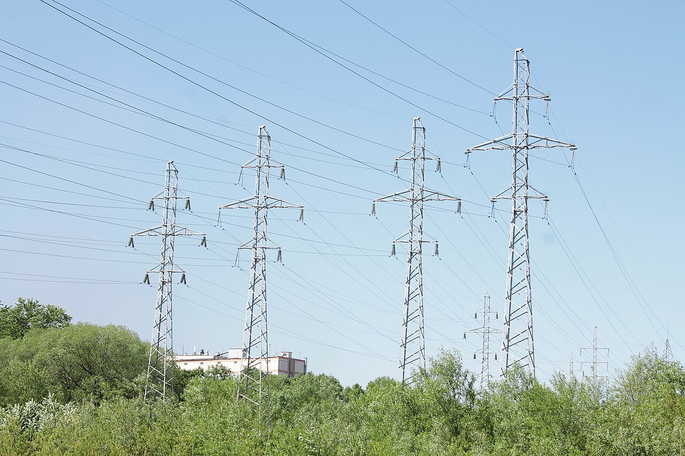
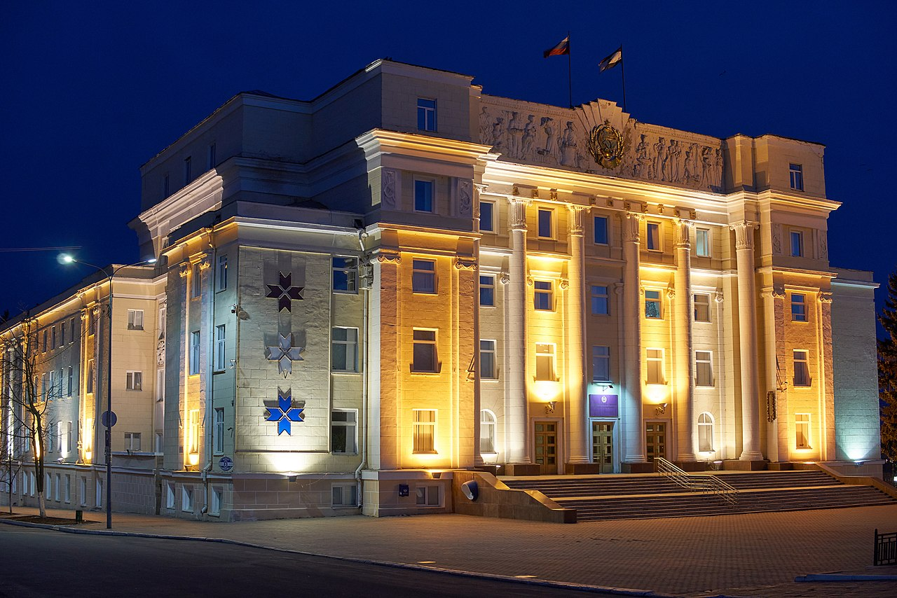
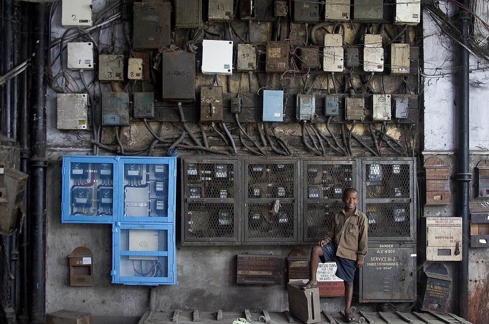

Мордовская энергосбытовая компания
Гарантирующий поставщик электрической энергии на территории Республики Мордовия. Обеспечиваем светом и энергией дома, предприятия и социальные объекты региона.
ПАО «Мордовская энергосбытовая компания» (сокращённо — «Мордовэнергосбыт») — крупнейшая энергосбытовая организация республики. Ценные бумаги компании обращаются на Московской бирже под тикером MRSB.
- Статус гарантирующего поставщика электроэнергии в Республике Мордовия.
- Обслуживание физических и юридических лиц, бюджетных учреждений.
- Современные сервисы: личный кабинет, онлайн-оплата, чат-бот «МАКС».
История
Компания ведёт свою историю с 1 февраля 2005 года, когда она была выделена из состава ОАО «Мордовэнерго» в ходе реформы электроэнергетики. С этого момента сбытовая деятельность была отделена от передачи и генерации энергии, а «Мордовэнергосбыт» стал самостоятельным гарантирующим поставщиком региона.
За прошедшие годы компания выстроила сеть клиентских офисов по всей республике, внедрила дистанционные сервисы обслуживания и автоматизированный учёт потребления электроэнергии.

Деятельность и масштаб
Основной вид деятельности — покупка и продажа электрической энергии конечным потребителям. Компания обеспечивает около 69% потребности Республики Мордовия в электроэнергии, что делает её ключевым участником регионального энергорынка.


Руководство и реквизиты
Генеральный директор — Лялькин Виталий Александрович. Головной офис расположен по адресу: 430016, Республика Мордовия, г. Саранск, ул. Большевистская, д. 117А.
- ИНН 1326192645, ОГРН 1051326000967
- Официальный сайт: mesk.ru
- Информация для инвесторов на Московской бирже (MRSB)
Компания участвует в экологических и социальных инициативах региона, среди которых акция «Сад памяти». Подробнее об услугах и новостях — в разделах «Новости» и «Контактные данные».